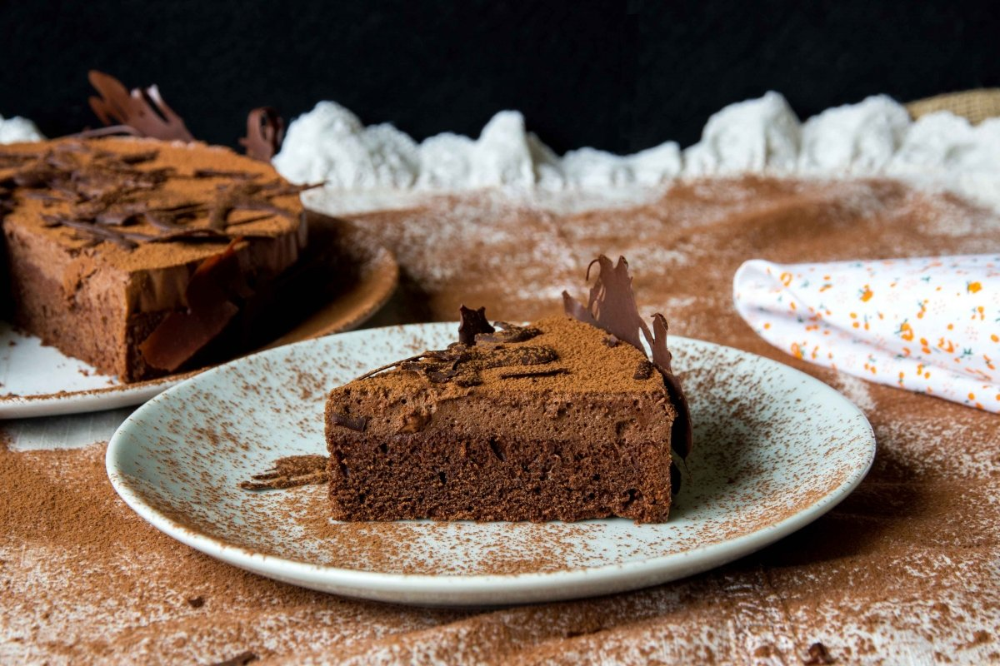

<div class="catalogo-container">
    <div class="mat-card-row">
        <mat-card class="example-card col-md-4" *ngFor="let comida of dataDtoComidas">
          
          <mat-card-content >
            <p class="text-center">{{comida.descComida}}</p>
          </mat-card-content>
          <mat-card-actions>
            <div class="button-container">
                <button mat-mini-fab color="primary" (click)="redireccionarPagina(comida.idComida)" aria-label="Example icon button with a menu icon">
                    <mat-icon>visibility</mat-icon>
                </button>
            </div>
            <h4>S/ {{comida.precioComida}}</h4>
          </mat-card-actions>
        </mat-card>
      </div>
</div>
